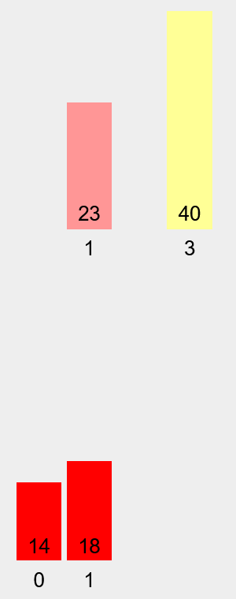
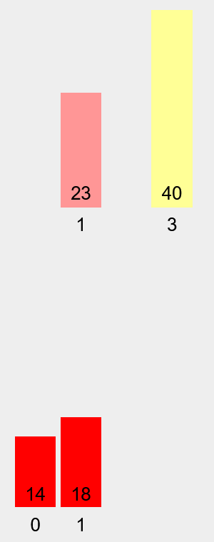

李嘉强
2024
算法是一个定义明确的、逐步的计算过程，用于解决特定的任务或问题。算法以一些值或一组值作为输入，并产生一些值或一组值作为输出。另一方面，算法也是解决明确定义的计算问题的工具。本文主要关注排序算法。
理论上，时间复杂度是描述算法完成所需时间估计的计算复杂度。复杂度可以看作是程序可能执行的最大操作次数。加法、减法、乘法和赋值等表达式可以忽略或不计算。时间复杂度有三种类型：大O表示最慢时间或最坏情况，大Theta(Θ)表示平均时间，大Omega(Ω)表示最快时间或最好情况。最常用的是大O符号。使用大O符号的原因是有很多因素，例如编程语言实现、编译器或解释器、内存速度、操作系统、计算机上运行的其他进程等等。因此，给出精确的物理运行时间是没有意义的。
一般来说，很难计算算法的精确运行时间，因为有很多因素会影响算法的运行时间，例如编程语言实现、编译器或解释器、内存速度、操作系统、计算机上运行的其他进程。然而，借助时间复杂度，可以计算出算法运行时间的估计值。随着数据不断增长，设计良好高效的算法的能力变得越来越重要。
在较小的数据集中，O(n²)和O(n)的差异可能很小。然而，在较大的数据集中，差异会变得显著。使用更好的算法时间复杂度，可以更有效地处理大数据集。使用低效的算法处理数百万或数十亿的数据可能需要几天或几年甚至永远。任何计算机规格的有效算法都将优于高端计算机中的低效算法。
冒泡排序是一种最简单的排序算法，它通过重复交换相邻的元素（如果它们的顺序错误）来工作。这个算法很慢而且非常低效，它具有二次时间复杂度或 O(n²)。
冒泡排序算法的伪代码是：
Bubble-sort(A, n)
for i = 1 to n-1
for j = n to i+1
if A[j] < A[j - 1]
swap A[j] with A[j – 1]
一个随机顺序的小数据集。
第一步：检查和交换。
第二步：更多的检查和交换。

第三步：更多的检查但是没有交换。40在正确的位置了
第四步：更多的检查和交换后,算法完成了


归并排序是一种使用分而治之方法的排序算法。它的工作原理是将输入数组递归地划分为更小的子数组，对这些子数组进行排序，然后将它们合并在一起以获得排序后的数组。该算法相对较快，平均时间复杂度为O(n log n)。
将排序后的子数组合并到一个数组。
归并排序算法的伪代码是：
Merge-sort(A,p,r)
if p>= r
return
q = [(p+r)/2]
Merge-sort(A,p,q)
Merge-sort(A,q+1,r)
Merge(A,p,q,r)
Merge(A,p,q,r)
n1=q-p+1
n2=r-q
let L[n1 – 1] and R[n2 – 1]
for I = 0 to n1 – 1
L[i] = A[p + i]
for j = 0 to n2 – 1
R[j] = A[q + j + 1]
i=0
j=0
k=p
while i<"n1 & j<"n2"
if L[i] <= R[j]
A[k] = L[i]
I = i+1
else A[k] = R[j]
j = j+1
k = k+1
while i < n1
A[k] = L[i]
I=i+1
K=k+1
while j < n2
A[k] = R[j]
j = j+1
k = k+1
归并排序的可视化。作者试图以与冒泡排序相同的方式进行可视化，但它让他感到恐惧。
与冒泡排序可视化中使用的示例相同的数组。

第一步：将数组分成 2 部分。

第二步：进一步分割数组，它可能会分割直到数组的长度为 1。

第三步：由于23大于18，所以取18。
第四步：由于右分区为空，所以取23。
第五步：将新数组中的元素复制回原始数组。

第六步：对于右分区，执行与步骤 1 到步骤 5 相同的事情。
 


第七步：合并。

第八步：将新数组中的元素复制到原始数组。数组已排序。
快速排序，像归并排序一样，是一种分而治之的算法。它选取一个元素作为枢轴，并通过将枢轴放置在子数组中的正确位置，将给定数组围绕枢轴进行分区。它的平均情况时间复杂度为O(n log n)，但它的最坏情况时间复杂度为二次时间复杂度或O(n²)。快速排序算法的优点是它在大型数据集上效率很高，并且由于该算法是一种分而治之的算法，因此更容易解决问题。
快速排序算法的伪代码是：
Quick-sort (A,p,r)
if p <"r"
q = Partition(A,p,r)
Quick-sort (A,p,q-1)
Quick-sort(A,q+1,r)
Partition (A,p,r)
x = A[r]
i=p-1
for j = ptor – 1
if A[j] <= x
i=i+1
swap A[i] with A[j]
swap A[i+1] with A[r]
return i+1
与冒泡排序和归并排序可视化中使用的示例相同的数组。


第一步：设置索引0为枢轴，将其与索引1和索引2进行比较。
第二步：检查索引0是否大于索引3并完成迭代。枢轴位于索引3之后，并且枢轴位于排序后的位置。
第三步：将枢轴设置为索引 0，以与步骤 2 中相同的方式与其他元素进行比较。
第四步：数组已排序。
测试由 C++ 和 Java 两种语言完成。两种代码相似，并且只使用必要的库或头文件，没有使用第三方库或头文件，以确保公平性并最大限度地减少不必要的性能下降。在 C++ 代码中，数据集由向量表示，在 Java 中，数据集由 ArrayList 表示。对于计时器，C++ 使用 high_resolution_clock，可以在 chrono 头文件中找到，而 Java 使用 System.nanoTime()。所有测试都在单核上完成，测试仅依赖于 CPU 时钟速度，没有进行多线程处理。对于笔记本电脑，测试是在电源适配器插入时完成的，以确保最佳性能。
有三个数据集。小尺寸数据集用于不太大的数据，其中包含 200 个元素。中等尺寸数据集包含 20,000 个元素。大尺寸数据集，大尺寸比中等尺寸略大，其中包含 200,000 个元素。每个数据集都是随机生成的整数，其值介于 1 和 1,000,000,000 之间。该集合不是连续的。
| 编号 | 主机名称/类型 | 主机规格 | C++ 编译器信息 | JDK 信息 |
|---|---|---|---|---|
| 1 | 卡文/笔记本电脑 | 5Ghz CPU 8GB DDR5 SSD Windows 11 | g++ 13.2.0 | OpenJDK 21 |
| 2 | 卡文/服务器 (Google Cloud Shell) | 2.2Ghz CPU 16GB 未指定的 SSD Ubuntu 22.04 kernel 6.1 | g++ 11.4.0 | OpenJDK 17 |
| 3 | ||||
| 4 | Virtualbox(Mac OS Mojave) | 4.0GHz, 5GB 1600Mhz | Apple LLVM 10 | Java 8 |
| 5 | Virtualbox(Arch linux) | 4.0Ghz, 5GB 5600Mhz | g++ 14.2 | Java 8 |

[C++测试结果的图表]

[Java测试结果的图表]
| 算法 | C++ | Java | ||||
|---|---|---|---|---|---|---|
| Run 1 (200) | Run 2 (20,000) | Run 3 (200,000) | Run 1 (200) | Run 2 (20,000) | Run 3 (200,000) | |
| 冒泡排序 | 0.219 | 2269.784 | 143.534 | 6.189 | 1968.862 | 202042.468 |
| 归并排序 | 0.115 | 11.337 | 52.205 | 0.784 | 34.748 | 70.006 |
| 快速排序 | 0.026 | 5.186 | 143.534 | 0.473 | 20.302 | 68.986 |
从所有结果来看，结果是显而易见的且符合预期的。冒泡排序是归并排序和快速排序中最慢的，无论是对于小型、中型还是大型数据集。快速排序比冒泡排序快大约 4,000 倍，比归并排序快 2.74 倍。归并排序比冒泡排序快 1300 倍。
虽然快速排序的最坏情况为 O(n²)，但测试结果并没有显示其弱点。它的性能优于归并排序。然而，选择理想的枢轴可能很棘手。不可能一直选择 100% 正确的枢轴。
无论使用哪种编程语言，如果与冒泡排序相比，归并排序和快速排序始终是更好的选择。CPU 时钟速度在任何时候都是 100%，无论运行该算法的操作系统如何。通过 Windows 上的任务管理器、Linux 上的 htop 以及 Mac OS 上的活动管理器监控时钟速度。这表明 CPU 在整个测试过程中都被充分利用。
测试结果得出结论，算法选择在决定性能方面起着至关重要的作用，尤其是在大型数据集上。运行高效算法的慢速计算机将优于运行低效算法的快速计算机。快速排序比冒泡排序快约 4,000 倍，归并排序快约 2.74 倍。快速排序显然是这里的赢家。
在现代，数据呈大规模增长，选择高效的算法对于在合理的时间内处理和分析海量数据集至关重要。轻微的低效会导致诸如增加成本、时间和更多问题等劣势。算法选择会影响有效地处理现代数据系统复杂性的能力。
Demaine, E., Ku, J. 和 Solomon, J. (2020) 6.006 算法导论，演讲 1：算法导论：电气工程和计算机科学，麻省理工学院开放课件。可在此处获取： https://ocw.mit.edu/courses/6-006-introduction-to-algorithms-spring-2020/resources/mit6_006s20_r01/ (访问日期：2024 年 9 月 3 日)。
Gregg, C. 和 Zelenski, J. (2020) 讲座 5/15：排序，CS106B 排序。可在此处获取： https://web.stanford.edu/class/archive/cs/cs106b/cs106b.1206/lectures/sorting/ (访问日期：2024 年 9 月 17 日)。
这几首歌就是制作这篇文章的时候，我比较常听的几首歌。都是韩国流行音乐。
最最最喜欢的